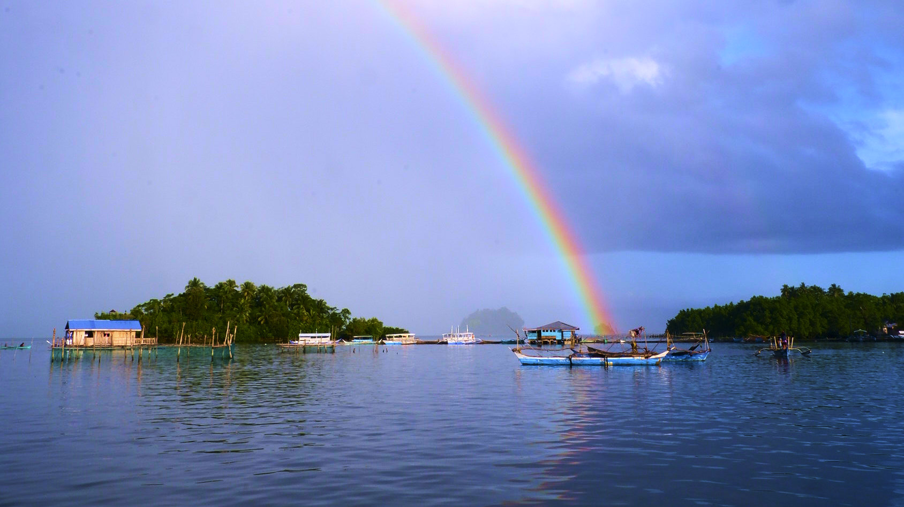

📍 Göteborg, Sweden
🎓 Trieste, Italy
🏠 Manila, Philippines
Mabuhay! I am Lloydie from the Philippines.
- Arctic (multilayer) clouds
- Cold pools
- Climate models
- Mathematical physics
I am a PhD student at Chalmers University of Technology, under the supervision of Professor Luisa Ickes. The goal of my research is to improve the representation of Arctic clouds in climate models.
Through the postgraduate diploma programme (a highly recommended program!) at The Abdus Salam International Centre for Theoretical Physics, I was introduced to atmospheric science and trained by notable scientists in Earth System Physics. I was fortunate to work with Professor Adrian Tompkins, characterizing cold pools formed over land and ocean using weather station data from the ARM Tropical Western Pacific sites.
Before that, I trained in Mathematical Physics under Professor Eric Galapon in his QuantMath Subgroup, where we elaborated on the method of finite-part integration and extended its applicability.
Besides research, I enjoy freediving 🤿, watching films 🍿, and photography 📷. If I'm not at school or in the lab, I'm probably in the ocean, at the cinema, or out walking around taking photos.

news
| Oct 8, 2026 | My first paper as an atmospheric scientist is out as a preprint! 🎉 Characteristics of wintertime multilayer clouds during air mass transformations at Ny-Ålesund, Svalbard, with Hans W. Chen, Gabriella Wallentin and Luisa Ickes, is now open for discussion in Atmospheric Chemistry and Physics. |
|---|